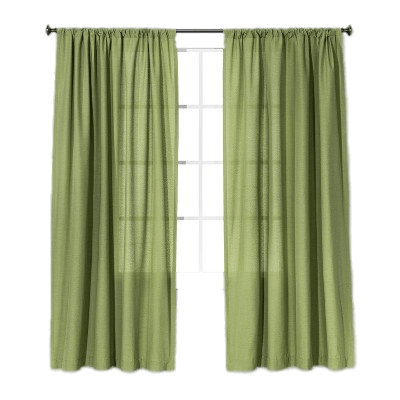
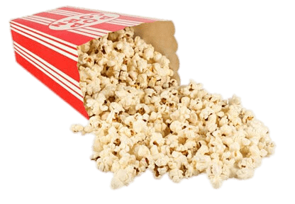

I stepped out of the cinema at nine forty-five p.m. and fell into a fine entanglement of mist. It just rained lightly during the film, I thought to myself. A short drizzle, like a movie, waking up from which you are left with nothing and all there ever was. Everything on the street broke and gave in to one another. The vague, velvety shimmer that street lamps cast upon the wet asphalt road hummed along the splattering sound of a motor swinging by. Some of the audience lingered on the sidewalk, chatting in pairs of two or three—their soft, low voices echoing with the sporadic neon ads above the closed stores across the street. A slow flood, lukewarm, streamed upon the intact impression that the film just left in my heart. It was a 1956 Japanese film called Early Spring: a self-contained two-and-a-half-hour story, about family life, in black and white. I could only describe what it left in me as a white, intact egg. The mist on the street wafted in, lapping gently on its shell, and there it started to crack. I held a flower that I bought earlier high up in the air, positioned it between my right eye and the street lamp. The transparent wrapping paper shattered and rendered the orange beam into a gentle aura. I smelled the heat that brought into existence all the unnamed alleys and cracks of the city. The rain is the city's sweat; its tiny fists clutched at the margins of my body and clothes, dampening and activating.
I was in Manhattan and dedicated to turning the second half of my Spring Break into one of films and no human conversation. I had done a lot of talking during the first week. I had no plan for the break until I heard about the new apartment of a family friend who just sent her daughter to school in the U.S. She bought it in hope that her daughter could come stay on weekends from a middle school in New Jersey. I called her up and said that I would help. I translated between her and IKEA customer service, argued with the overpricing delivery person, and nailed down the insurance details for installing curtain rods. At first, the apartment housed nothing but the two of us. Sunlight brewing above Hudson drenched in from the bare glasses, stalking in the rooms over the day. The apartment stood wide and quiet, wearing the air of a sundial. The first few nights, I would lie down on the not-yet-installed curtains that we laid out on the floor, relishing the thought of being poorer than I actually was, couchsurfing in a big city, pretending to have more dreams and beliefs than I actually do.
There, I attempted to stick Metrocard into the card holder on my phone case. Much thinner and more malleable than my credit card and student ID, it adhered to them so tightly that I feared it could make itself disappear. But there I was, down the tunnels. The subway arrived with a fit of stench; the next moment, I was taken away, like someone stepping onto a banana skin and tumbling down to Wonderland.
The goal was to go to as many cinemas as possible. The subway trips, the howling and swinging, were long, blank, no-thoughts in between. They were the blinking of the eye, congealing contiguous images. I would emerge from the tunnels and enter a different little dark room, where an illuminated, vertical screen faced me, in which a distinct and mysterious world goes on. There I stared into it and revelled.

A dream I had on my second night into the art-cinema mission:
I was in Beijing and I had to go somewhere. It was a weekend, and the appointment was nothing serious or scary, so I wasn't in a rush. I went on to use the subway, and started to arrive at wrong places. I came up from the ground and found myself at more and more suburban locations, the periphery of Beijing, where the city flattens and thins, where I rarely visited until my family moved there last summer.
I would emerge from a subway entrance of the grey-blue tone typical of Beijing's infrastructure. Behind me, the gates were dusted, and in front of me, the late afternoon sky was sinking into the impenetrable dimness and taint of dusk. The landscape, sparsely populated by the tall residential buildings that I grew up in, gave way to a gigantic, yellowish firmament, which frightened me like the touch of a doll's wooden eye. Each time I thought I'd arrive at the right place, I rushed out of the subway gate only to hear in one way or another that something dangerous was going on nearby. One time, my mom told me through fragmented text messages that she learned about a mass shooting taking place in my proximity; another time, a flock of people walked past me in a mumble of voices, moving away from something, at times turning around to see it, sending each other anxious and skeptical looks.
So I immediately flew back to the subway, the shaking traffic of leaving. I learned to respond faster and faster, tossing myself into the station's embrace with familiarity and intimacy. A revolving door always stood at the station entrance, slowing me down. Gradually, the platform between the stone walls and the rail narrowed until it was only at arm's length, the width of a door. I hurled myself back into the train, again and again, only to learn that I did not know how to escape with the subway and had now entered a pure game of chance where the chance itself dwindled. I've lost, or I never had the grammar in which the train system was coded, and I knew I would never get it right that way.
So the symbolism of the dream was that I'm running away from something. I know I can enumerate a list of those until the game becomes dreary. But still, let me try to talk about it, in my most reduced language capacity, by the literal translation of an in-class assignment in my French class.
Une Lettre Pour Moi-Même
Depuis la sortie pour l'université, j'utilise de plus et plus souvent la phrase, ( — Excuse-moi, Chloé, how do you say early twenties in french? — Ah, les années deux mille vingt. — the one for oneself, actually.) «ma début de la vingtaine».
Since I left home for college, I start to use, more and more often, the phrase "early twentieth."
Je lui donne un nom, en essayant d'expliquer les choses dans ma vie que je ne peux pas comprendre: les confusion du futur, des sentiments, et la fatigue partout.
I give it a name, in attempting to explain the things in my life that I can't understand: the confusion about the future, sentiments, and about a sense of fatigue that prevails.
Je viens d'aimer voyager. J'aime rencontrer les nouvelles expériences, bien sûr, mais—plus importante—je peux sortir de la confusion.
I came to love travelling. I love running into new experiences, for sure, but—more importantly—I could leave from the confusion.
J'écris en anglais, j'apprends le français. Chaque jour, je parle avec mes amies en anglais. Ma vie chinoise est dans la traduction.
I write in English; I learn French. Each day, I speak with my friends in English. My Chinese life is in translation.
It was not finished. The class ended and Chloé took my piece of paper away. When I wrote this passage above, I hoped for a moment that I had my writing to look at. I have the problem of transcription. How do you force the mouth of the traveller upon that of the narrator, in the way Lorrie Moore described, if they speak different languages? My Literary History professor would say that reading in translation is not qualitatively particular from reading the original, and I agree; but what about writing, the process rendered much murkier and chaotic, more of the world effaced rather than generated?
Chinese is a kid I shut in a windowless room and mandated myself to forget about: you have no choice. You learn a language by forgetting another. An experience goes through your mind once, in the form of electricity, then immediately it degrades into a thought—my philosophy professor said: no intention before language. Memory is that kind of experience. Those I processed in English for my workshops will not return to Chinese. Me and my luggage standing in the airport lobby in Beijing, feeling light, underwhelmed, dizzy. We walk through the customs examination. We circle around a few doors at the demarcation. Behind it looms the crowd waiting for their people, and my mom is among them. It has been increasingly difficult to face her after I've left home for college, because I missed too much of her, both of us undergoing metamorphoses, good or bad, that are no longer in sync.
My world looms larger and my language shrinks. I use what I have. A conqueror is what you become in your early twentieth: you are insatiable and you want both. It's good that you are in the works, my modern dance instructor said. When you try to dance at the edge of what you can, what happens? His wingspan reminds me of the lake thirty minutes away from school, where the gentle breeze spreads far the glaze of the sun. You must not flinch at the acidity of imprecision. You produce prolific language junk. You speak upon the edge of what you can.